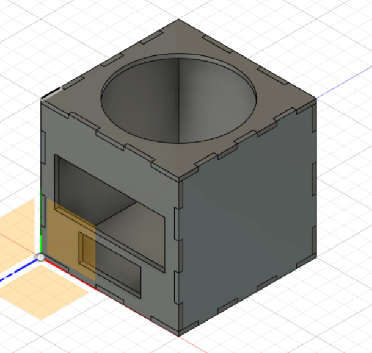
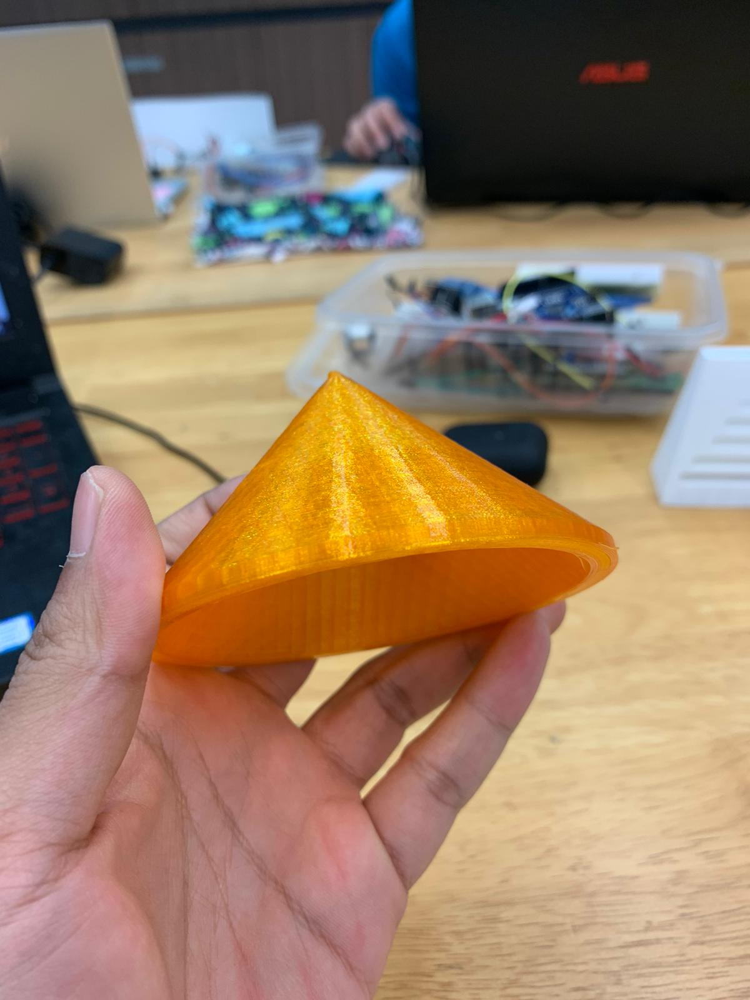
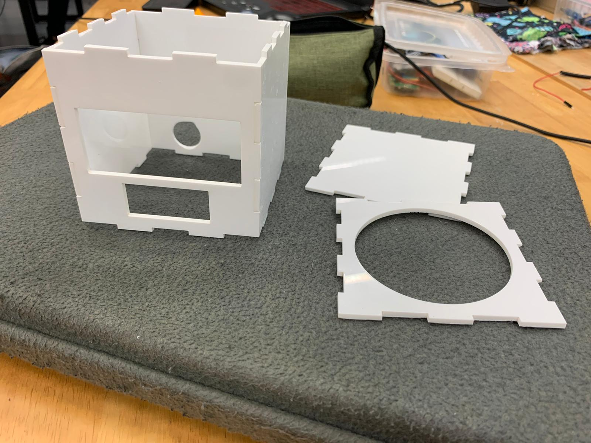
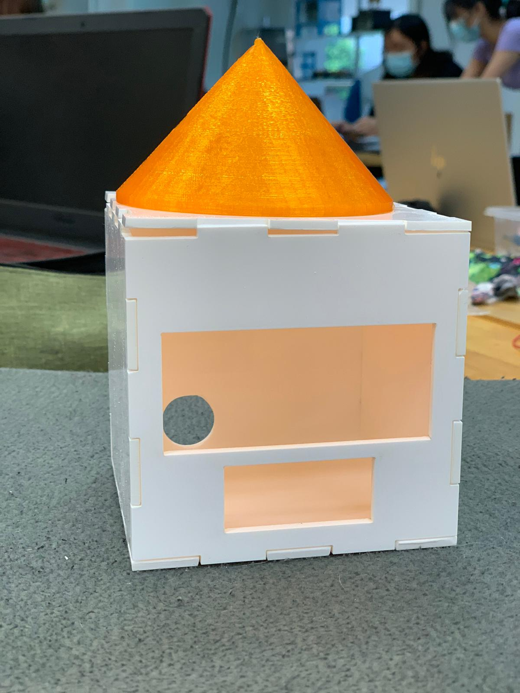
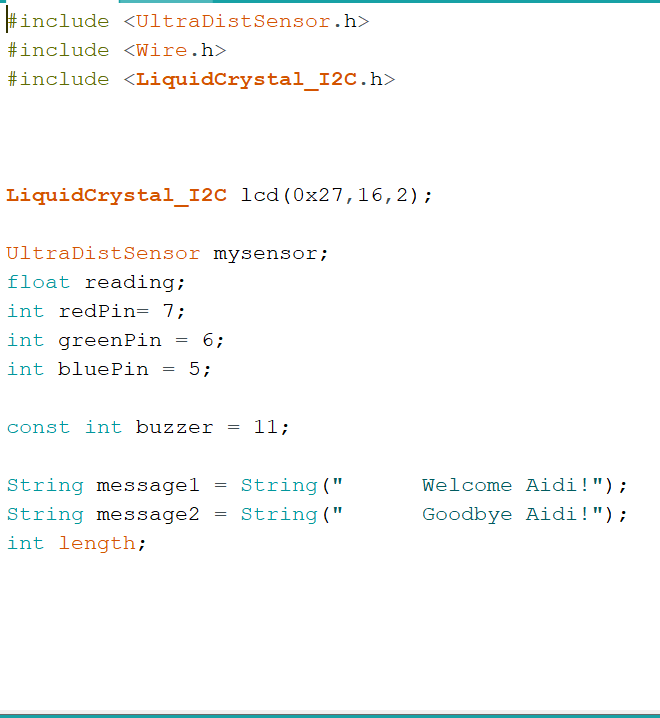
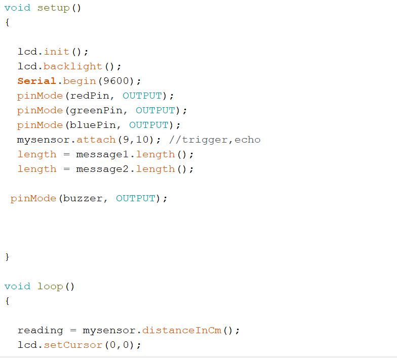
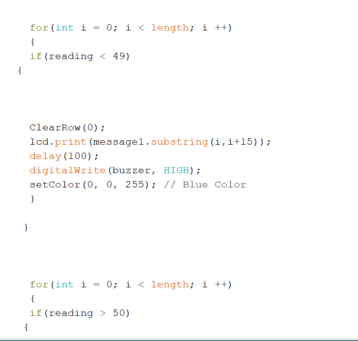
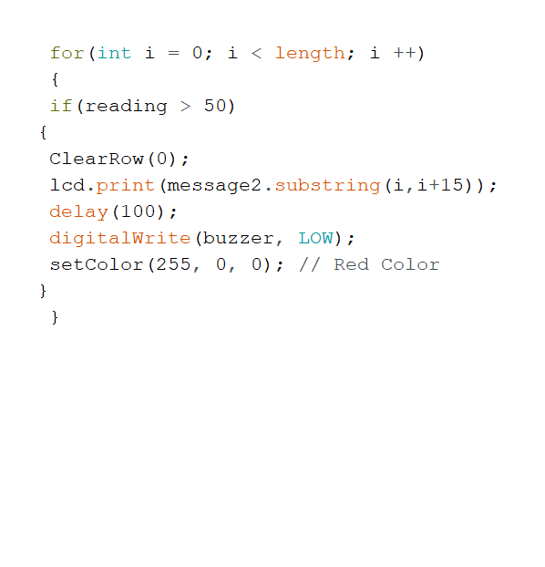
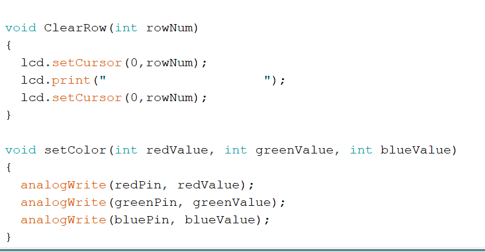
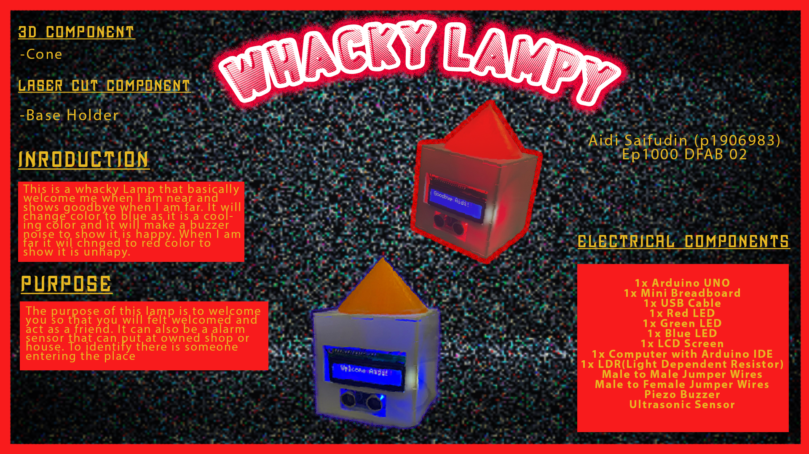

Final Project
Introduction to the Project
For my Final Project, I am going to create a mood lamp. I have made a sketch on how I want my mood lamp to be. The name of the lamp is Whacky Lampy!As the days progress, I will post my updates and my progress on how I am making this mood lamp of mine. The mood lamp will function such that whenever I am near, the color of the lamp will turn blue and the LCD will appear "Welcome Aidi". The color blue represent comfort and welcoming. However, when I am away, the mood lamp will changed to color red and shows "Goodbye Aidi". This shows like the mood lamp is angry or sad whenever I am about to leave. This is my initial idea of using different types of LED lights, measuring distance of a person near the lamp and potraying messages on the LCD. As the project progress I might add a few more changes or upgrade to the lamp. The insipiration i got was from this blog here.
Materials
- 1x Arduino UNO
- 1x Mini Breadboard
- 1x USB Cable
- 1x Red LED
- 1x Green LED
- 1x Blue LED
- 1x LCD Screen
- 1x Computer with Arduino IDE
- 1x LDR(Light Dependent Resistor)
- Male to Male Jumper Wires
- Male to Female Jumper Wires
- Piezo Buzzer
- Ultrasonic Sensor
- Acrylic for laser Cutting
- Filament for the cover lamp
Progress
Another idea that I would like to add to this project is using arduino sound. Such that whenever I am near it will play a soft tune but whenever I am far it will play a rough tune. For the material i would love to use an opaque material so that the color of the LED can be seen and there is a hole on top so light can be seen too.
The material i will be using is the filament of the 3D Printing. I think it is translucent enough such that lights can be see through. As for the base, I will be using wood. The wood will be cut such that it is hollow so that the arduino can be put inside. Also, the square at the front, the LCD will be placed there and a small square beside it is to put the Ultrasonic Sensor. There will also be music played when you are near.
As the date is getting nearer till submission, I encounter a lot of problems. I decided to simplify it such that when I am near my lamp, it will show "Welcome Aidi!" with scrolling text and a blue light to show calmness as blue is a calm color. If I go far, it will show a scrolling text of "Goodbye Aidi!" and red color will glow.
This is the design that i came out with. My mood lamp will take part of 2 components. The cylinder which will cover the LED lights. There is also the base holder which is going to fit the cylinder. The small rectangles is the for the LCD screen and for the Ultrasonic Sensor.The one hole is for the USB wire to go through because my mood lamp is using USB wire. I might add a push button so that it can be switched on and off. I have measured them according to their sizes.

After much consideration, I have decided to make changed my cylinder to a cone instead as the 3D print is taking too long. By using a cone, it will minimised the time for 3D print. Previously it was 7 hours but with a cone, it has changed to 2 hours. The square box is for laser cutting while the cone I 3D print it. The box I uses hinges so that it can fit together if it has been laser cut individually.
The Cone

The progress is quite simple for doing the cone. The way i make it is to draw a outer circle and a inner circle. Then i extrude it. After that i drew an triangle and revamp it. Extrude but at a circular motion. It will become a cone. Although the video shown the filament is green, I changed it halfway to orange as I like the color orange. For 3D printing for my cone, it takes up 2 hours. I have used 20% infill for my cone.
The Base


For the base holder, what I did was, I drew rectangles for each sides. After that, I drew a line and seperate it into 5 parts. Before that, I changed the parameters for each sides such as thickness, width and height. This will prevent me from doing double work to remember the value of the sides that we want. All we have to do is type the variable. After doing the lines and seperate into 5 on the sides like the picture above, I extrude the one i picked. This will create a "teeth" like square for our hinges for laser cutting. After that, I have used "Rectangle Pattern" to have the mirror effect for each sides. After completing all the sides, I add the holes for the LCD, Ultra Sonic Sensor and the circle behind for all the wires. The thickness I put was 3mm. For the width, length and height is 100mm. As for my base, I changed using 3mm acrylic. The laser cut only takes 5 mins to cut. After cutting, I did filing for smooth edges. After that, I used acrylic glue to bind the acrylic together. Lastly, I used hot glue and super glue to stick the cone to the top part of the base holder.
The Codes





These are the codes I used to program the codes. There were a lot of challenges when I want to code as things just not going as planned. I end up making a reaction lamp where the buzzer will buzz when I am near and it will show "Welcome Aidi!" and when i go it will say "GoodBye Aidi!".
Final Product
